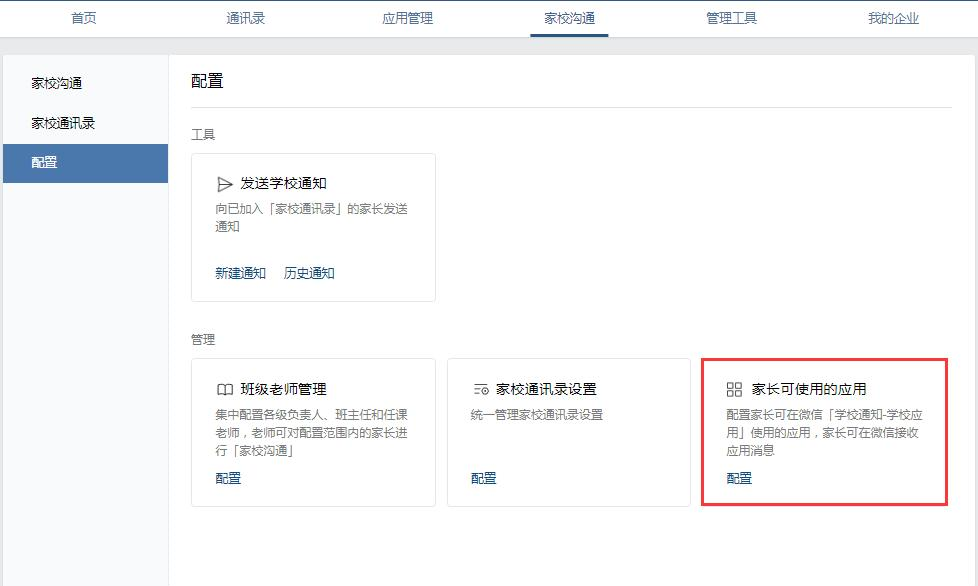
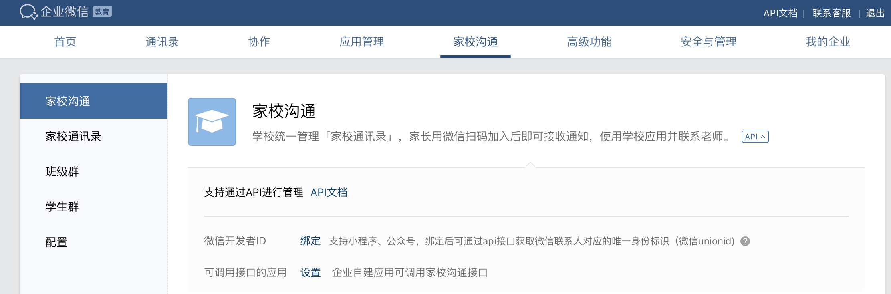
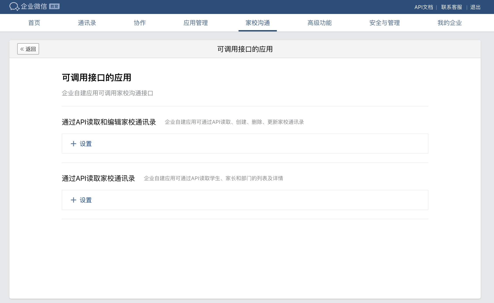

目录
学校的老师可以添加外部联系人进行工作沟通，外部联系人分为企业微信联系人和微信联系人两种类型。
家校应用开发者可以通过API接口设置“学校通知关注模式”，发送“学校通知”和管理“家校通讯录”等功能。第三方应用和企业的旧版家校接口已经迁移，并且不再推荐使用。
配置“家长可使用的应用”，家长可在微信接收应用消息：管理员进入企业微信管理后台后点击“家校沟通”-“配置”页面进行配置。

管理员进入企业微信管理后台后点击“家校沟通”页面，点开“API”小按钮，点击可调用接口的应用旁的设置按钮，会进入家校沟通的可调用接口应用配置页面。
在家校沟通的可调用接口应用配置页面，可选择自建应用进行配置

可设置同时具备读取以及编辑家校通讯录权限的应用，此类应用仅可设置一个
可设置具备读取家校通讯录权限的应用，此类应用可配置多个
ExternalUserId是企业微信外部联系人的标识，但需要开发者(尤其是第三方开发者)注意的是，对于同一个外部联系人，不同调用方（企业/第三方服务商）获取到的ExternalUserId是不同的。